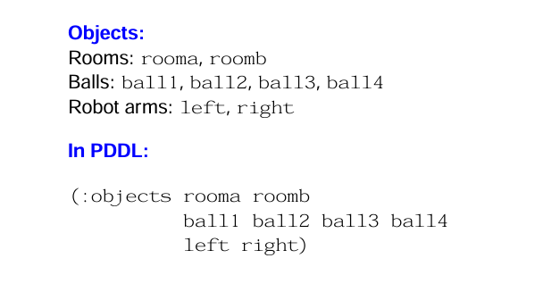
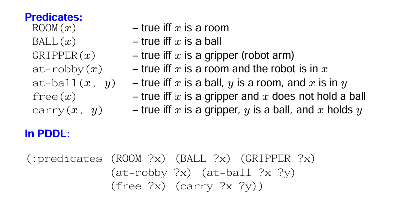
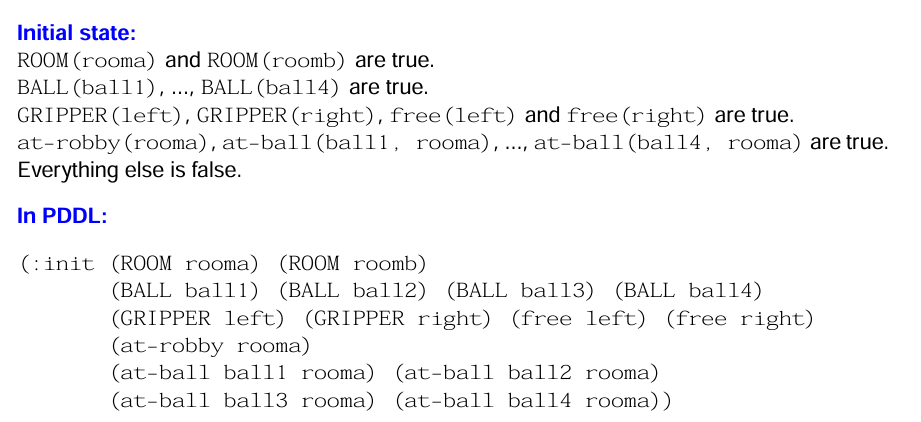
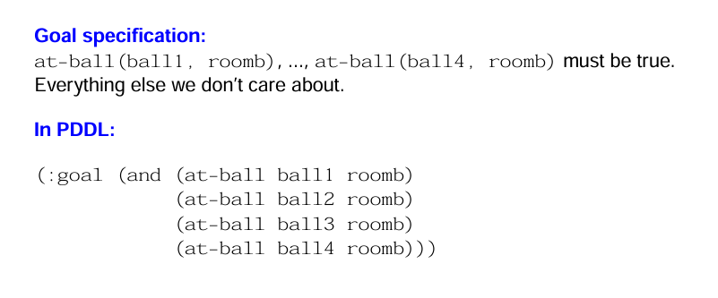
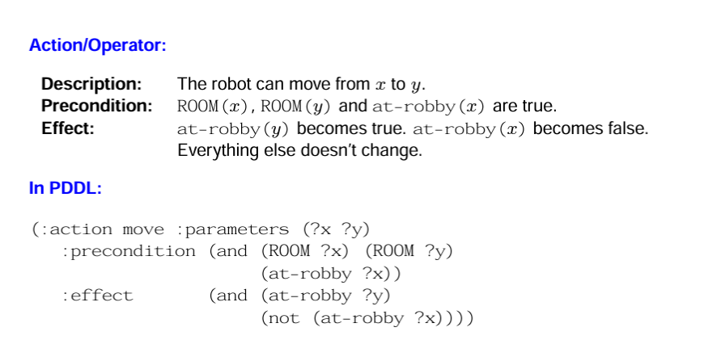
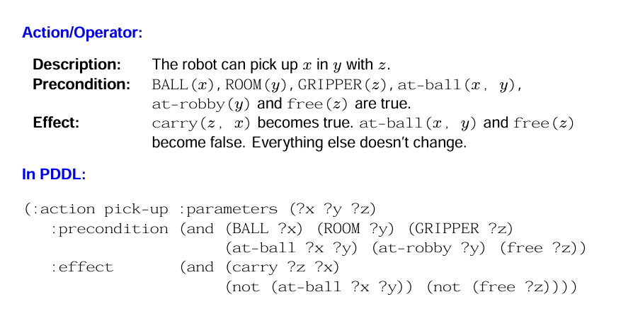
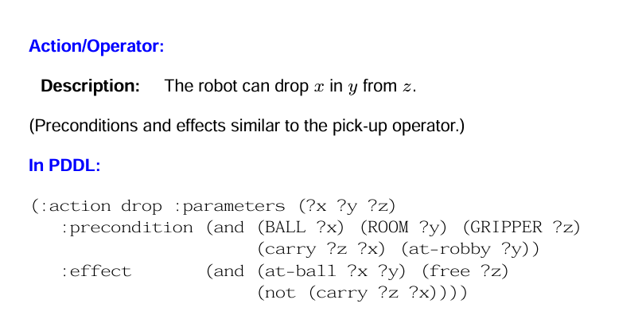

Introduction to Classical Planning and PDDL
Itay Segev
Sequential Decision Making
The decision made at a given time will be followed by other decision and therefor the decision maker has to consider the implications of his decision on subsequent decisions.
What is Classical Planning?
- Finding a sequence of actions that transitions an agent from an initial state to a goal state.
- Characteristics:
- Fully observable: The agent has complete knowledge of the state.
- Deterministic: The outcomes of actions are predictable.
- Finite: The problem has a finite set of states and actions.
- Challenges:
- Large state spaces.
- Efficient representation and search.
Classical planning - Mathematical model
- \(S\): A finite set of states.
- \(A\): A finite set of actions.
- \(T: S \times A \to S\): Transition function mapping a state and action to a successor state.
- \(I \subseteq S\): Initial state(s).
- \(G \subseteq S\): Goal states.
Objective:
Find a sequence of actions \(\pi = [a_1, a_2, \dots, a_n]\) such that applying \(\pi\) transitions the agent from \(I\) to a state \(s \in G\).
What is PDDL?
- Definition: A standardized language for encoding classical planning problems.
- Origin: Developed to unify different planning systems and research efforts.
- Purpose:
- Provides a structured way to define the problem.
- Allows interoperability between planners.
- Core Concepts:
- Abstract representation of objects, states, and actions.
- Clear separation of domain knowledge (rules) and problem specifics (instances).
Components of a PDDL Task - Objects
- Entities of interest in the domain.
- Example:
rooma,roomb,ball1,ball2,left-arm,right-arm.
Components of a PDDL Task - Predicates
- Logical statements describing properties or relationships.
- Example:
(ROOM rooma): True ifroomais a room.(at-robot rooma): True if the robot is inrooma.
Components of a PDDL Task - Initial State
- A snapshot of the world at the start.
- Example:
(at-robot rooma),(at-ball ball1 rooma).
Components of a PDDL Task - Goal Specification
- Logical conditions that must be satisfied in the final state.
- Example:
(at-ball ball1 roomb)and(at-ball ball2 roomb).
Components of a PDDL Task - Actions
- Defined with:
- Preconditions: Conditions that must hold for the action to be valid.
- Effects: Changes caused by the action.
- Example:
- Action:
move-robot- Preconditions:
(at-robot rooma)and(ROOM roomb) - Effects:
(not (at-robot rooma))and(at-robot roomb)
- Preconditions:
- Action:
How to Put the Pieces Together
Planning tasks specified in PDDL are separated into two files:
- A domain file for predicates and actions.
- A problem file for objects, initial state and goal specification.
Running Example - Gripper task
Gripper task with four balls: There is a robot that can move between two rooms and pick up or drop balls with either of his two arms. Initially, all balls and the robot are in the first room. We want the balls to be in the second room.
Gripper task: Objects

Gripper task: Predicates

Gripper task: Initial state

Gripper task: Goal specification

Gripper task: Movement operator

Gripper task: Pick-up operator

Gripper task: Drop operator

Blocks World

Connection to MDPs
An MDP is defined as a tuple: \(M = (S, A, P, R, \gamma)\)
Classical Planning as a Special Case of MDPs:
- Transition probabilities \(P(s' | s, a)\) are deterministic (\(0\) or \(1\)).
- No reward function (\(R\)); focus is on reaching goal states.
- Planning objectives correspond to solving deterministic, goal-oriented MDPs.
Planning
- Relies on a domain model that explicitly defines states, actions, and transitions.
- Goal-oriented: Focuses on generating a solution for a well-defined task.
- Independent of data: Does not require trial-and-error interaction.
- Example: Solving a logistics problem with predefined routes and tasks.
Learning
- Uses data or interaction to improve behavior or estimate the model.
- Typically focuses on policy optimization or estimating action outcomes.
- Example: Reinforcement learning for navigating an unknown environment.
Comparison Table
| Aspect | Planning | Learning |
|---|---|---|
| Input | Model | Data/Interaction |
| Output | Plan | Learned Policy |
| Scope | Well-defined tasks | Adapts to unknown environments |